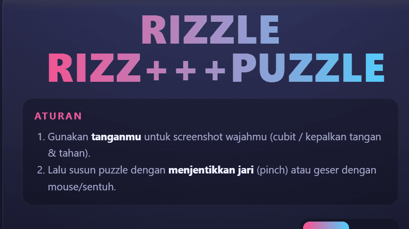
RIZZLE redefines the classic sliding puzzle by turning live selfies into personalized challenges. Built with real-time camera integration and multiplayer support, it provides an interactive, social, and highly engaging browser gaming experience.
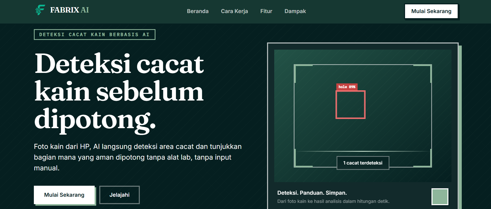
FABRIX AI is a web-based fabric inspection platform designed to help textile and garment SMEs improve quality control through automated defect detection, quality classification, and cutting guidance. The platform integrates deep learning (YOLO via Roboflow) and machine learning (XGBoost) to streamline fabric inspection, reduce human error, and generate consistent, exportable PDF reports for easier documentation and analysis.
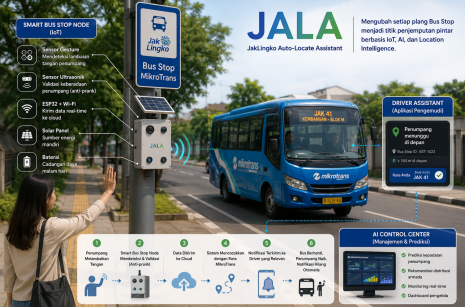
JALA is an AI-powered smart public transportation system designed to improve passenger accessibility and fleet efficiency for MikroTrans (JakLingko) services. By integrating IoT sensors and AI-based predictions into bus stops, the system detects waiting passengers in real time without requiring smartphones or mobile applications, while providing drivers with passenger alerts and helping fleet operators optimize vehicle dispatch through real-time sensor data.
LKS Nasional Kecerdasan Artifisial 2026
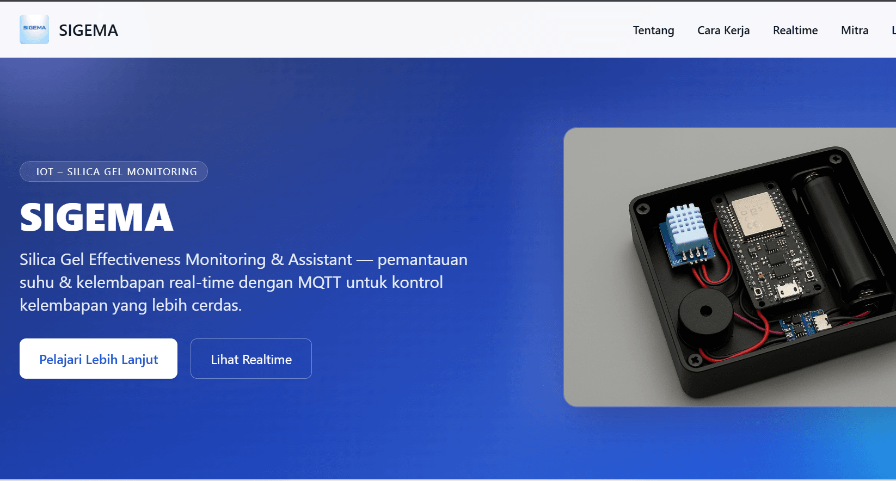
SIGEMA - Silica Gel Effectiveness Monitoring & Assistant IoT project integrating ESP32 and MQTT to monitor silica gel effectiveness in real time.
3rd Place Winner in Youth Scientific Writing – Technology Innovation by DISPORA Jakarta Pusat (July 2025).
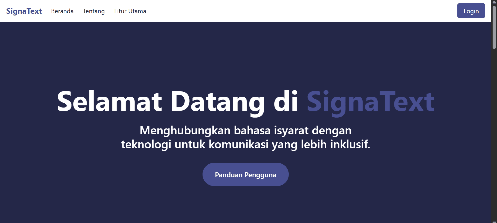
SignaText combines website development and Machine Learning to help people with disabilities communicate more easily.
Capstone Project for Fullstack Web Developer Cohort @ Bank DBS | DBS Foundation (April 2025).
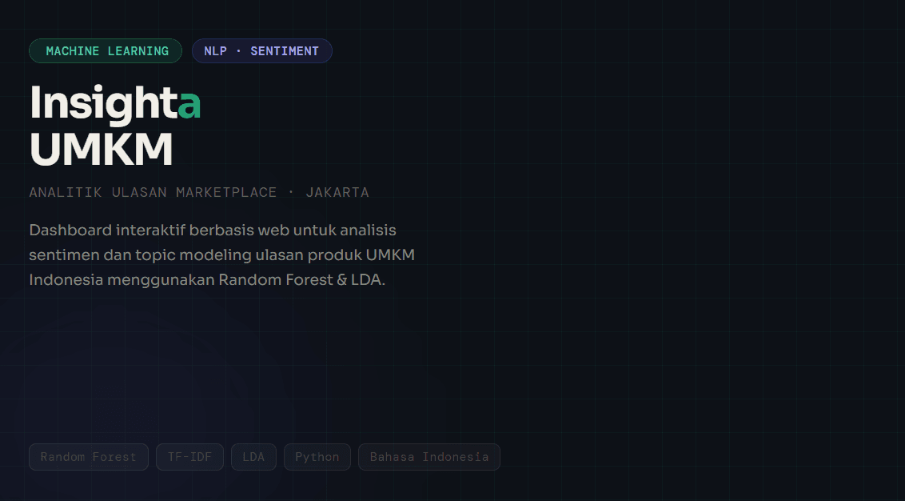
Insighta UMKM is a machine learning-powered dashboard that analyzes Indonesian marketplace reviews using sentiment analysis and topic modeling. The platform helps MSMEs identify customer satisfaction trends and key business insights through interactive visualizations.
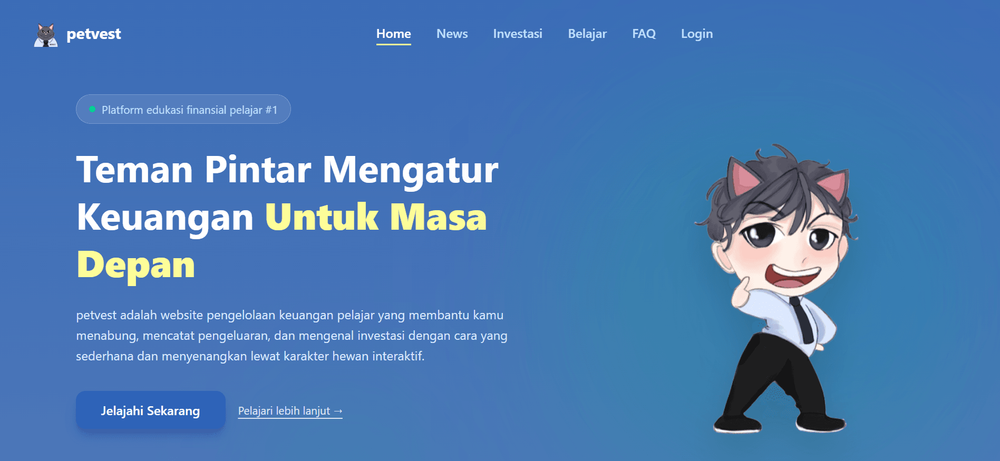
PetVest is a student-friendly financial management platform designed to help users track expenses, build saving habits, and learn basic investment concepts in a simple and engaging way. The platform features interactive animal characters to create a more fun and approachable financial learning experience for students.
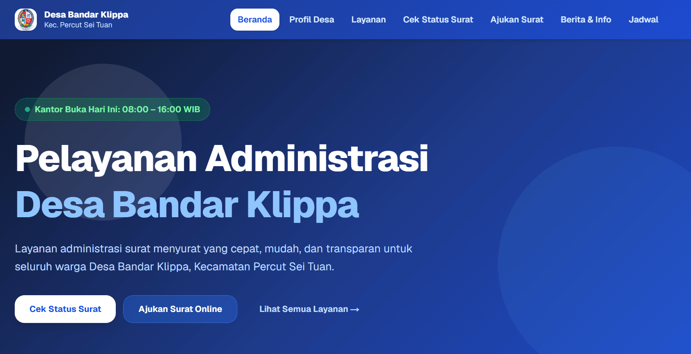
Website Desa Bandar Klippa is a digital village administration platform developed to simplify public service processes for residents of Desa Bandar Klippa. The website provides fast, transparent, and accessible administrative letter services through a modern web-based system.
Source code is not publicly available due to active community use and administrative privacy considerations.
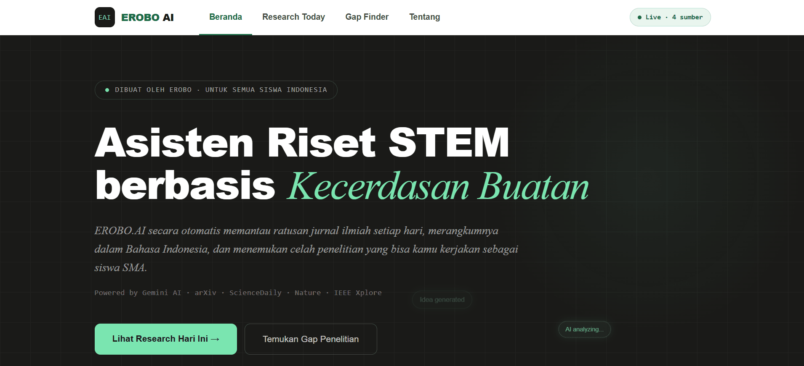
AI-powered STEM research assistant for automated journal monitoring, Indonesian-language summarization, and research gap discovery.
Live Demo available upon request.
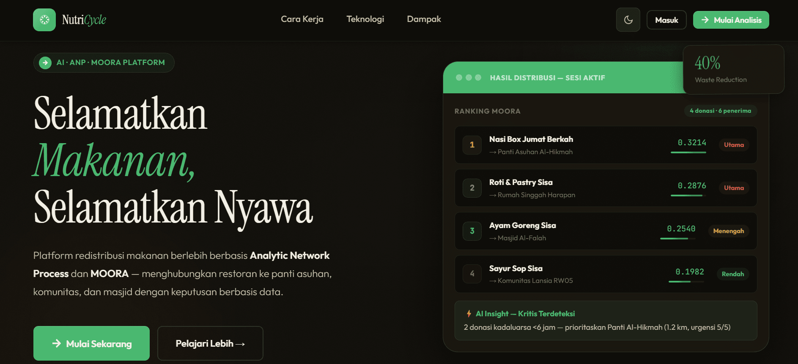
Intelligent web application for UMKM business location and type selection powered by ANP and MOORA algorithms.
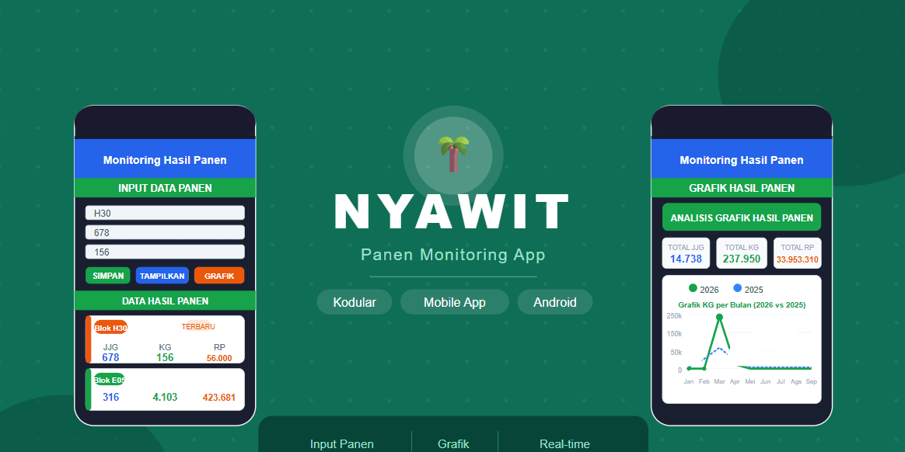
NYAWIT – Panen Monitoring is a mobile-based harvest monitoring application developed to simplify palm oil harvest data recording and visualization in real time. The app provides features for inputting harvest results, tracking production data, and analyzing harvest trends through interactive graphs to support more efficient field management.
Client-based project developed for palm oil harvest monitoring and field data management purposes.
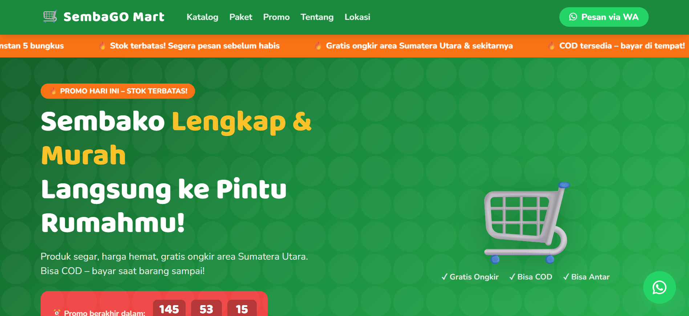
SembaGO Mart is a responsive grocery marketplace website designed to simplify online shopping for daily household needs with fast delivery and cash-on-delivery support. Built with a clean and user-friendly interface, the platform focuses on accessibility, promotional visibility, and seamless customer interaction for local consumers.
Client-based project developed for a local grocery business to support digital product promotion and online ordering services.
Mobile app design addressing social and environmental issues.
Prototype available upon request
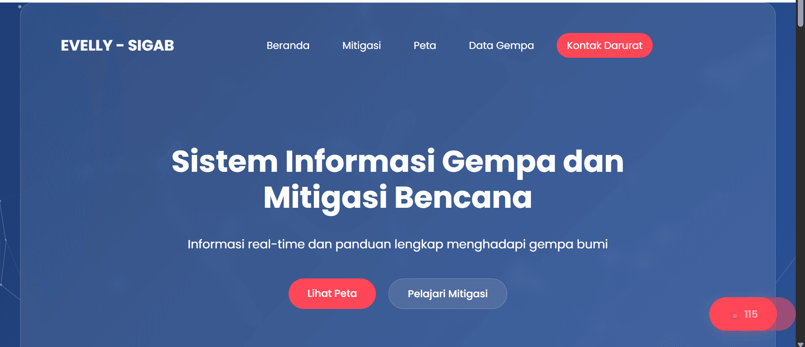
SIGAB - Sistem Informasi Gempa dan Mitigasi Bencana Earthquake mitigation and real-time monitoring web app using BMKG API and Leaflet.js.
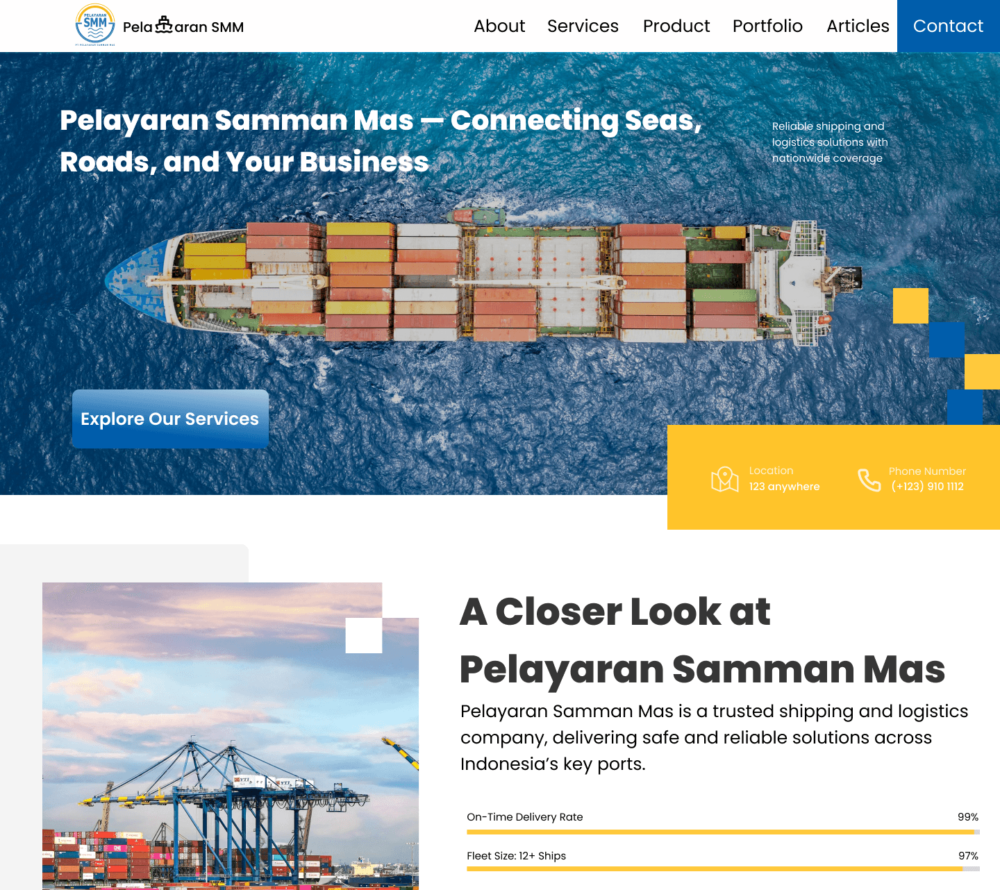
Company profile website design for a logistics and transportation company
Prototype available upon request